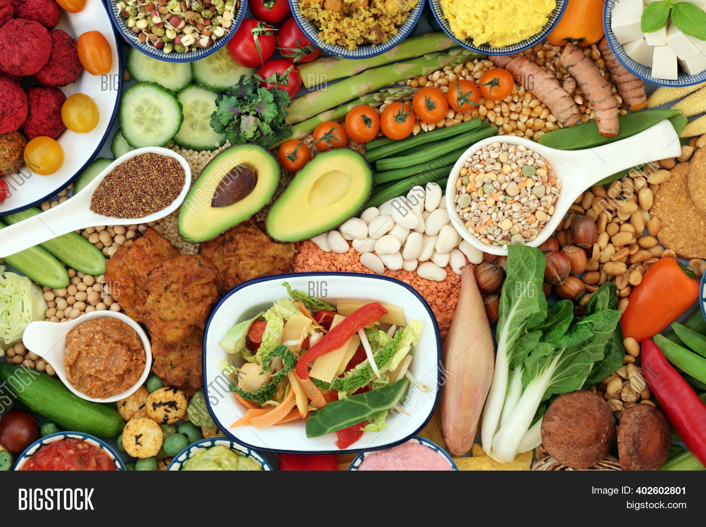
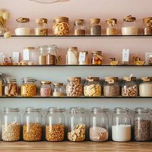

The Ultimate ALDIS List
Meal Ideas:
- veggie chilli
- tofu scramble w/ avo toast
- teriyaki salmon w/ rice + veggies
- banana date oatmeal
- pasta w/ red sauce + veggie sausage
Pantry
Canned Goods
- crushed tomatoes
- beans (chickpea, black, pinto...)
- coconut milk
- almond butter
Dry Goods
- flour
- lentils/rice
- pasta
- sugar (brown + raw)
- medjool dates
- rolled oats

Fridge
Dairy
- soymilk
- unsweetened almond milk
- whole fat greek yogurt
- irish butter
Protein
Produce
- avacados
- mixed greens
- bananas
- carrots

Freezer
Veggies + Fruit
- broccoli
- spinach
- cauliflower
- peas
- blueberries
Misc
- veggie sausage
- ravioli
- pierogis
- tilapia/cod fillets